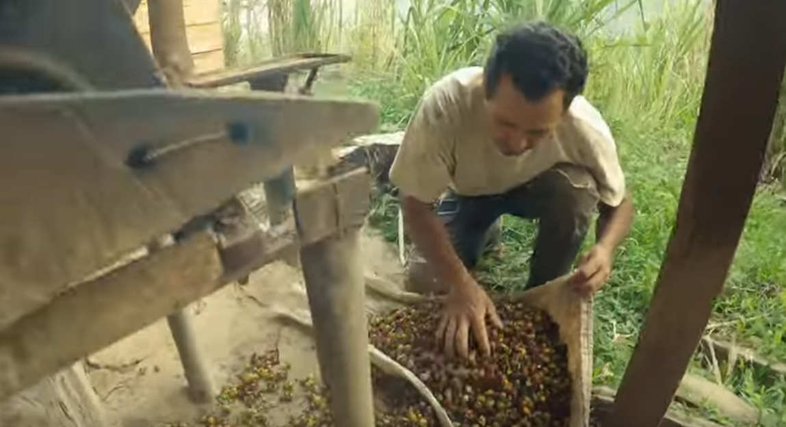
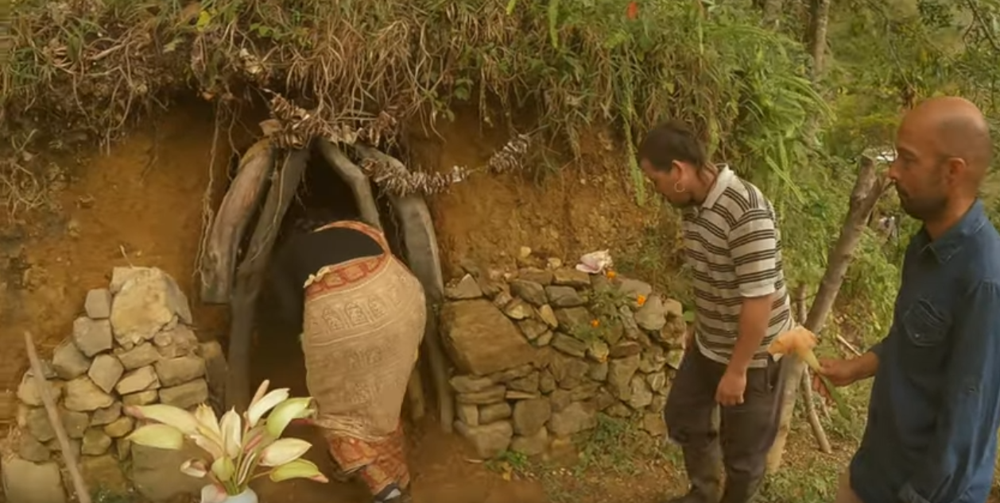
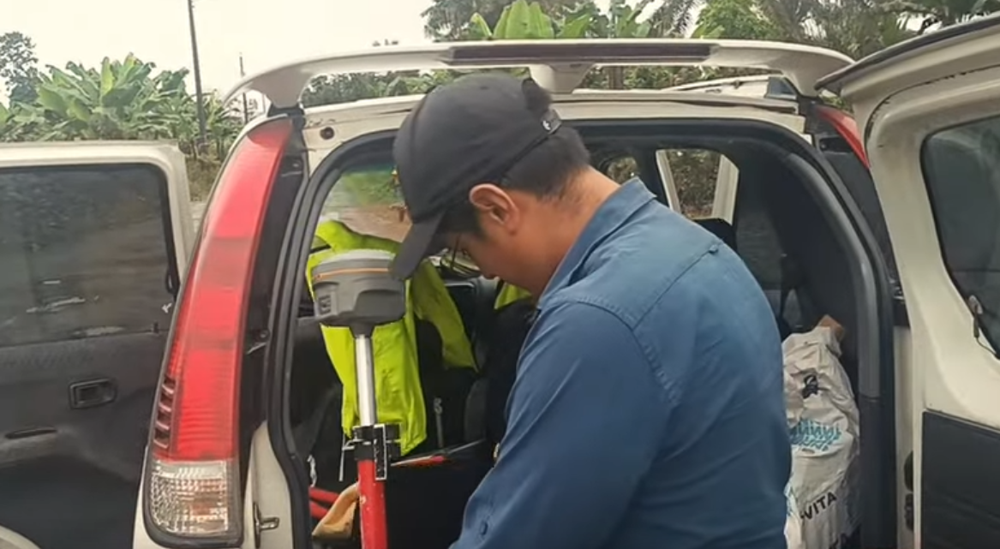

Nuestros Proyectos

Llanos Venezolanos: Apoyo a los Campesinos
Trabajamos codo a codo con los campesinos en los llanos venezolanos, ayudándolos en sus tareas agrícolas. Mejoramos su calidad de vida, aportando nuestro esfuerzo y conocimientos para fortalecer sus técnicas de cultivo y producción.
Ver Video

Mérida: Colaboración con la Comunidad Hare Krishna
En las montañas de Mérida, colaboramos con la comunidad Hare Krishna. Cultivamos naranjas y ordeñamos vacas, aprendiendo sobre la agricultura sostenible y compartiendo experiencias espirituales. Fue un intercambio enriquecedor que fortaleció los lazos comunitarios.
Ver Video

Santo Domingo, Ecuador: Levantamiento Topográfico en Bimbe del Toachi
Realizamos un levantamiento topográfico en el pueblo de Bimbe del Toachi, en Santo Domingo, Ecuador. Este trabajo fue clave para el desarrollo y planificación de la comunidad, sentando las bases para una infraestructura sólida y un futuro prometedor.
Ver Video